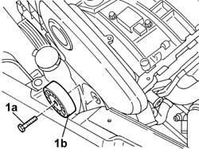
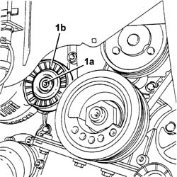

1092G21 Engine components single belt FIXED TENSIONER - R.R. with belt removed
- Path
- Procedures > 10 ENGINE > 1092 engine component miscellaneous drives > 1092G single drive belt for various engine components > 1092G21 Engine components single belt FIXED TENSIONER - R.R. with belt removed
- Kind
- repair procedure (removal / refitting; the operation number is the code)
- Applies to
- engines: 2.0 TB, 2.4 20V, 3.0 V6, 3.2 V6; all production periods
- Interactive page
- https://sloeber94.github.io/elrnDB-lThss/en/#/96370
Applies to: engines: 2.0 TB, 2.4 20V; all production periods
 Removing
Removing
 Refitting
Refitting1. Undo the bolt (1a) and remove the engine components single belt fixed tensioner (1b).

Applies to: engines: 2.0 TB, 2.4 20V; all production periods
Refitting
Removing- Position the engine components single belt fixed tensioner and secure it using the bolt.
 | Value - daNm | Fastening | Component | Ø |
|---|---|---|---|---|
. | 5 | Bolt | SINGLE BELT FIXED TENSIONER VARIOUS | M10 X 1.25 |
Applies to: engines: 3.0 V6, 3.2 V6; all production periods
Removing
Refitting1. Undo the bolt (1a) and remove the engine components single belt fixed tensioner (1b).

Applies to: engines: 3.0 V6, 3.2 V6; all production periods
Refitting
Removing- Fit the engine components single belt fixed tensioner and secure it tightening the bolt to the recommended torque.
| Value - daNm | Fastening | Component | Ø |
|---|---|---|---|---|
. | 2.2 | Bolt | SINGLE BELT MOVING TENSIONER VARIOUS | M8 |